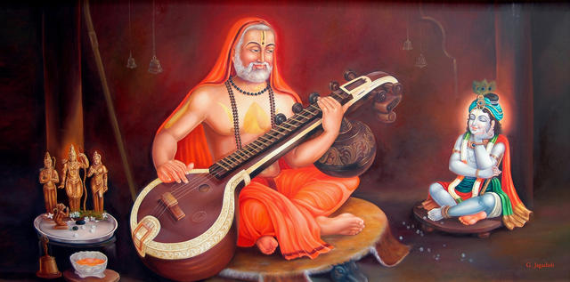

Welcome to ABMMM Hostel,
Gulbarga
Welcome to ABMMM Hostel,
Gulbarga


ಶ್ರೀ ಪೂರ್ಣ ಬೋಧ ಗುರು ತೀರ್ಥ ಪಾಯೋಬ್ಧಿ ಪರ,
ಕಮರಿ ಮಾಕ್ಷ ವಿಷಮಾಕ್ಷ ಸೈರ ಸ್ಪರುಸಾಂತಿ,
ಪೂರ್ವೋತಾರಮಿತ ತರಂಗ ಚರತ್ ಸುಹಮಸ,
ದೇವಾಳಿ ಸೇವಿತ ಪರಂಗ್ರಿ ಉಗ್ರ ಪಯೊ ಜಾಲಗ್ನ. 1
ಜೀವೆಸಾ ಬೇಧ ಗುಣ ಪೂರ್ತಿ ಜಗತ್ ಸುಸತ್ವ,
ನೀಚೌಒಚ ಭಾವ ಮುಖ ನಕ್ರ ಗಾಣೈ ಸಮೇತ,
ದುರ್ವಧ್ಯ ಜಪತಿ ಗಿಲೈ ಗುರು ರಾಘವೇಂದ್ರ ,
ವಾಗ್ ದೇವತಾ ಸಾರಿಧಮುಂ ವಿಮಲಿ ಕರೋತು. 2
ಶ್ರೀ ರಾಘವೇಂದ್ರ ಸಕಲ ಪ್ರಧಾತ,
ಸ ಪದ ಕಾಂಚಾ ದ್ವಯ ಭಕ್ತಿ ಮಗ್ಭ್ಯಂ,
ಆಧದ್ರಿ ಸಮ್ಮೋಧನ ದೃಷ್ಟಿ ವಜ್ರ,
ಕ್ಷಾಮ ಸುರೇಂದ್ರ ಆವತ್ತು ಮಾಮ ಸದಾಯಂ. 3
ಶ್ರೀ ರಾಘವೇಂದ್ರೋ ಹರಿ ಪದ ಕಾಂಚಾ ,
ಣೀಶೆವನ್ನ್ ಲಬ್ಧ ಸಮಸ್ತ ಸಂಪತ್,
ದೇವ ಸ್ವಭವೋ ದಿವಿಜ ಧ್ರೂಮೊ,
ಆಯಾಮ ಇಷ್ಟ ಪ್ರಧೋ ಮೇ ಸತತಂ ಸ ಭೂಯಾತ್. 4
ಭವ್ಯ ಸ್ವರೂಪೊ ಭಾವ ದುಖ ತೂಲ,
ಸಂಗ ಅಗ್ನಿ ಚಾರ್ಯ ಸುಖ ದೈರ್ಯ ಶಾಲಿ,
ಸಮಸ್ತ ದುಷ್ಟ ಗ್ರೇಯಮ್ ನಿಗ್ರಹೇಸೋ,
ದುರಾತ್ಯ ಯೋಪ ಪ್ಲವ ಸಿಂಧು ಸೇತು. 5
ನಿರಸ್ಥ ಧೋಷೋ ನೀರವಧ್ಯ ವೇಷ,
ಪ್ರತ್ಯರ್ಥಿ ಮೂಖ್ತ್ವ ನಿಧನ ಭಾಷಾ,
ವಿಧ್ವಥ್ ಪರಿಜ್ಞೆಯ ಮಹಾ ವಿಸೆಶೋ,
ವಾಘ್ವಸ್ವರಿ ನಿರ್ಜ್ಜತ ಭವ್ಯ ಸೆಶ. 6
ಸಂತಾನ ಸಂಪತ್ ಪರಿಶುದ್ಧ ಭಕ್ತಿ,
ವಿಜ್ಞಾನ ವಾಗ್ ದೇಹ ಸೂಪಟ ವಧೀಂ,
ದತ್ವಾ ಸರೆರೊತ್ಧ ಸಮಸ್ತ ದೋಷಂ,
ಹತ್ವಾ ಸ ನೋ ಅವ್ಯಾಧ್ ಗುರು ರಾಘವೇಂದ್ರ. 7
ಯಾದ್ ಪದೋಧಕ ಸಂಚಯ ಸುರ ನಧಿ ಮುಖ್ಯ ಪಗ ಸಾಧಿತ,
ಅಸಂಖ್ಯ ಅನುತಮ ಪುಣ್ಯ ಸಂಖ ವಿಲಸದ್ ಪ್ರಖಾತ ಪುಣ್ಯವಹ,
ದುಸ್ ತಾಪ ತ್ರಯ ನಸನೋ ಭುವಿ ಮಹಾ ವಂಧ್ಯಯ ಸುಪುತ್ರ ಪ್ರಧೋ,
ವ್ಯಂಗ ಸ್ವಂಗ ಸಮೃಢೀಧೋ ಗ್ರಹ ಮಹಾ ಪಾಪ ಹಸ್ತಂ ಸ್ರಯೇ. 8
ಯಾದ್ ಪದ ಕಂಜ ರಾಜಸ ಪರಿಈ ಭೂಷಿತಾಂಗ,
ಯಾದ್ ಪ್ಯಾಡ್ ಪದ್ಮ ಮಧು ಪಾಯಿತ ಮಾನಸ ಎ
ಯಾದ್ ಪದ ಪದ್ಮ ಪರಿಕೀರ್ತನ ಜೀರ್ಣಾವಚ,
ತದ್ ದರ್ಶನಂ ದುರಿತ ಕಾನನ ದವಾಮೃತಂ. 9
ಸರ್ವ ತಂತ್ರ ಸ್ವಾತಂತ್ರೋಸೌ
ಶ್ರೀ ಮಧ್ವ ಮತ ವರ್ಧನ,
ವಿಜಾಯೀಂದ್ರ ಕಾರಭ್ಜೋತ್ಧ
ಸುಧೀಂದ್ರ ವರ ಪುತ್ರಕ, 10
ಶ್ರೀ ರಾಘವೇಂದ್ರೋ ಯತಿ ರ್ಯಾಟ್
ಗುರುರ್ ಮೇ ಸ್ಯಾತ್ ಭಯ ಪಹಾ
ಜ್ಞಾನ ಭ್ಕ್ತಿ ಸುಪುತ್ರಯುಃ,
ಯಾಸ ಶ್ರೀ ಪುಣ್ಯ ವರ್ಧನ. 11
ಪ್ರತಿವಾದಿ ಜಯ ಸ್ವಂತ ಭೇಧ ಚೀನಾ ಧಾರೋ ಗುರು,
ಸರ್ವ ವಿಧ ಪ್ರಾಣೇನೆನ್ಯೋ ರಾಘವೇಂದ್ರಣ್ನ ವಿಧ್ಯತೆ.12
ಅಪರೋಕ್ಷಿ ಕೃತ ಶ್ರೀಸಾ ಸಮುಪೇಕ್ಷಿತ ಭಾವಜ,
ಅಪೇಕ್ಷಿತ ಪ್ರಧಾತ್ ಅನ್ಯೋ ರಾಘವೇಂದ್ರಣ್ನ ವಿಧ್ಯತೆ. 13
ದಯಾ ದಾಖಿಣ್ಯ ವೈರಾಗ್ಯ, ವಾಕ್ ಪಟವ ಮುಖನಗೀತ,
ಶಾಪನುಗ್ರಹ ಸಾಕ್ತನ್ಯೋ ರಾಘವೇಂದ್ರಣ್ನ ವಿಧ್ಯತೆ.14
ಅಜ್ಞಾನ ವಿಸ್ಮೃತಿ ಭ್ರಾಂತಿ ಸಮಷ್ಯಪಸ್ಮೃತಿ ಕ್ಷಯ,
ತಂತ್ರ ಕ್ಯಾಂಪ ವಾಚಾ ಕೌಂಟ್ಯ ಮುಖ ಎ ಚೇಂದ್ರಿಯೋಂಗವ,
ದೋಷಾಸ್ತೆ ನ್ಯಾಸ ಮಯಂತಿ ರಾಘವೇಂದ್ರ ಪ್ರಸಾದತ. 15
“ಓಂ ಶ್ರೀ ರಾಘವೇಂದ್ರಾಯ ನಾಮ” ಇಃ್ಯಾಷ್ಟಾಕ್ಶಹಾರಾ ಮಂತ್ರತ,
ಜಪಿಠದ್ ಭಂಗ ವಿಧಾತ್ ನಿತ್ಯಂ, ಈಶತ ಸ್ಯೂರ್ ನಾ ಸಂಸಾಯ. 16
ಹಂತು ನಾ ಕಾಯಜಂ ದೋಷಂ ಅತ್ಮಮೀಯ ಸಮುದ್ ಭಾವನ,
ಸರ್ವಂ ಆಪೀ ಪುಮರ್ಥಸ್ಚ ದದಾತು ಗುರು ರಾತ್ಮ ವಿಧ್. 17
ಇತಿ ಕಾಲ ತ್ರಯೇ ನಿತ್ಯಂ ಪ್ರಾರ್ತಾನಾಂ ಯ ಕರೋತಿ ಸ,
ಇಹ ಮುತ್ರಾಪ್ತ ಸರ್ವೇಷ್ಟೋ ಮೋದತೇ ನಾತ್ರ ಸಂಸಾಯ. 18
ಆಗಮ್ಯ ಮಹಿಮಾ ಲೋಕೇ ರಾಘವೇಂದ್ರೋ ಮಹಾ ಯಾಸ,
ಶ್ರೀ ಮಧ್ವ ಮತ ಡುಘ್ಧಬ್ಧಿ ಚಂದ್ರೋ ಆವಾತ ಸದಾ ಅನಘ. 19
ಸರ್ವ ಯಾತ್ರಾ ಫಲ ವ್ಯಾಪ್ತ್ಯೈ ಯದ ಶಕ್ತಿ ಪ್ರದಕ್ಷಿನಮ,
ಕರೋಮಿ ತವ ಸಿಧಸ್ಯ ವೃಂದಾವನ ಗತಂ ಜಲಂ,
ಶಿರಸಾ ಧಾರಾಯಮ್ಯಾಧ್ಯ ಸರ್ವ ತೀರ್ಥ ಫಲಾಪ್ತಾಯೆ. 20
ಸರ್ವಭೀಷತ ಸಿಧ್ಯರ್ಥ ನಮಸ್ಕಾರಂ ಕಾರೊಮ್ಯಹಂ,
ತವ ಸಂಕೀತನಂ ವೇದ ಶಾಸ್ತ್ರಾರ್ಥ ಫಲ ಸಿಧಯೆ. 21
ಸಂಸಾರೇ ಅಕ್ಷ ಸಾಗರೆ ಪ್ರಕ್ರ್ತಿತೋ ಆಗಹಾದೆ ದುಸ್ತಾರೇ,
ಸರ್ವ ವಿಧ್ಯಾ ಜಾಲ ಗ್ರಹೈರಣುಪಮೆ ಕಾಮಧಿ ಭಂಗ ಕೂಳೆ,
ನಾನಾ ವಿಭ್ರಮ ದ್ರೂಭ್ರಮೆ ಆಮೀಟ್ತ ಭಯಸ್ತೋಮಾಧಿ ಫೆನೋತ್ಕತೆ,
ದುಖೋತ್ಕೃಷ್ಟೆ ವಿಶೇ ಸಮುಧರ ಗುರೋ ಮಾಮ ಮ್ಯಾಗ್ನ ರೂಪಂ ಸದಾ. 22
ರಾಘವೇಂದ್ರ ಗುರು ಸ್ತೋತ್ರಮ್ ಯ ಪಡೆತ್ ಭಕ್ತಿ ಪೂರ್ವಕಂ,
ತಸ್ಯ ಕುಷ್ಟಢಿ ರೋಗನಂ ನಿವೃತಿ ಸ್ತ್ವರಾಯ ಭವೇಡ್. 23
ಅಂಧೋಭಿ ದಿವ್ಯ ದೃಷ್ಟಿ, ಸ್ಯಾಧೇಡ ಮೂಕೋಪಿ ವಾಗ್ಪಾತಿ,
ಪೂರ್ಣ ಆಯು ಪೂರ್ಣ ಸಂಪಾತಿ, ಸ್ತೋತ್ರಸ್ಯಾಸ್ಯ ಜಪಾನಗಾವೆತ್. 24
ಯ ಪೀಭೆ ಜ್ಜಳಮೇತೇನ ಸ್ತೋಟ್ರೇನಾವಪಿ ಮಂತೃತಂ,
ತಸ್ಯ ಕುಕ್ಷಿ ಗತ ದೋಷ ಸೌಎರ್ವೆ ನಸ್ಯಂತಿ ತತ್ ಕ್ಷಣಾಥ್. 25
ಯಾದ್ ವೃಂದಾವನ ಮಾಸಧ್ಯ ಪಾಂಗು ಕಂಚೋಪಿ ವಾ ಜನ,
ಸ್ಟೋರೆಣನೇನ ಯ ಕುರ್ಯಾತ್ ಪ್ರದಕ್ಷಿಣ ನಮಸ್ಕೃತಿ,
ಸ ಜಂಗಳೋ ಭಾವೆ ದೇವ ಗುರು ರಾಜ್ ಪ್ರಸಾದತ. 26
ಸೋಮ ಸೂರ್ಯ ಪಾರೋಗೊ ಚ ಪುಷ್ಯಾರ್ಕಾಧಿ ಸಮಾಗಮೆ,
ಯೋ ಅನುತಮಂ ಇದ್ಮ ಸ್ತೋತ್ರಮಷ್ಟೊತರ ಸತಾಂ ಜಪೆತ್,
ಬೂತ ಪ್ರೇತ ಪಿಸಾಚಾಧಿ ಪೀಡಾ ತಸ್ಯ ನಾ ಜಯತೇ. 27
ಏತದ್ ಸ್ತೋತ್ರಮ್ ಸಮುಚಾರ್ಯ ಗೂರೋರ್ ವೃಂದಾವನಂತಿಕೆ,
ದೀಪ ಸಂಯೋಜನಾ ಜ್ಞಾನಂ ಪುತ್ರ ಲಭೋ ಭವೇಡ್ ದರೂವಂ. 28
ಪರವಧಿ ಜಯೋ ದಿವಾ ಜ್ಞಾನ ಭಕ್ತ್ಯಾ ಯಧಿ ವರ್ಧನಂ,
ಸರ್ವಾಭೀಷ್ಟ ಪ್ರವೃಧಿಸ್ಯಣ್ನತ್ರ ಕಾರ್ಯ ವಿಚಾರಣಾ. 29
ರಾಜ ಚೋರ ಮಹಾ ವ್ಯಗ್ರ ಸರ್ಪ ನಕ್ರಾಧಿ ಪೀಡನಂ,
ನಾ ಜಯತೇ ಅಸ್ಯ ಸ್ತೋತ್ರಸ್ಯ ಪ್ರಭವನ್ನತ್ರ ಸಂಸಾಯ. 30
ಯೋ ಭ್ಕ್ತ್ಯ ಗುರು ರಾಘವೆದ್ರ ಚರಣ ದ್ವಂಧಂ ಸ್ಮರನ. ಯ ಪಡೆತ್,
ಸ್ತೋತ್ರಮ್ ದಿವ್ಯಮೀಧಂ ಸದಾ ನಹಿ ಭವೇಡ್ ತಸ್ಯ ಅಸುಖಂ ಕಿಂಚ್ನ. 31
ಕಿಮ್ ತ್ವಿಷ್ಟಾರ್ಥ ಸಮೃಢಿರೆವ ಕಮಲ ನಧ ಪ್ರಸಾಧೋಧಾಯತ್,
ಕೀರ್ತೀರ್ ಡಿಗ್ ವಿಧಿತ ವಿಭೂತಿರಾತುಲ ಸಾಕ್ಷೀ ಹ್ಯಾಸ್ತೋತ್ರ ಹಿ. 32
ಕಿಮ್ ತ್ವಿಷ್ಟಾರ್ಥ ಸಮೃಢಿರೆವ ಕಮಲ ನಧ ಪ್ರಸಾಧೋಧಾಯತ್,
ಕೀರ್ತೀರ್ ಡಿಗ್ ವಿಧಿತ ವಿಭೂತಿರಾತುಲ ಸಾಕ್ಷೀ ಹ್ಯಾಸ್ತೋತ್ರ ಹಿ. 32
ಇತಿ ಶ್ರೀ ಅಪ್ಪಣ್ಣ ವಿರಚಿತಂ
ಶ್ರೀ ರಾಘವೇಂದ್ರ ಸ್ತೋತ್ರಮ್ ಸಂಪೂರ್ಣಂ.